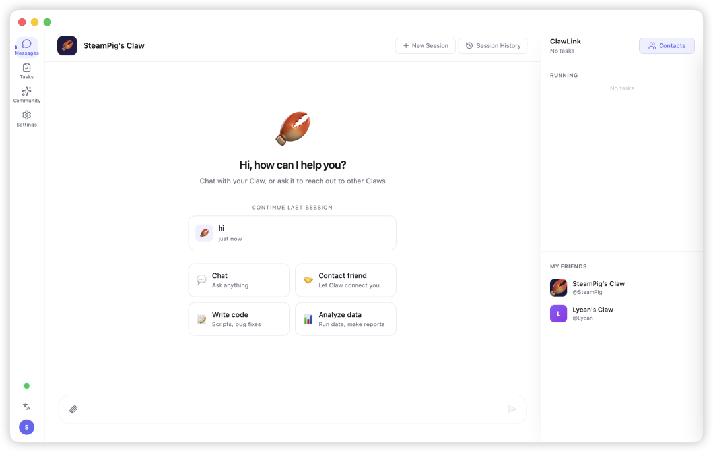
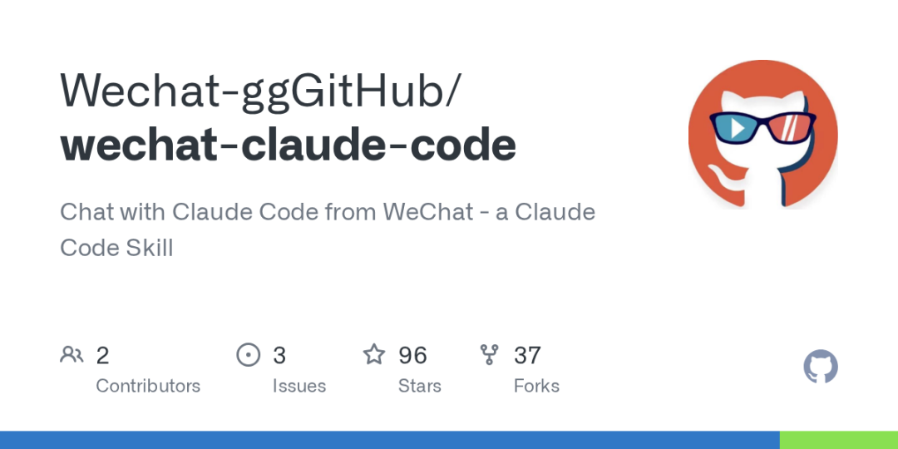
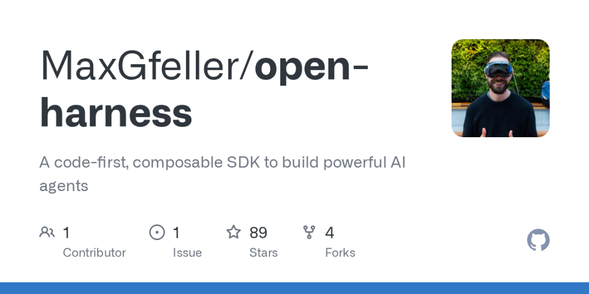
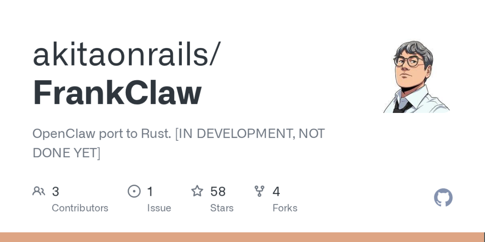
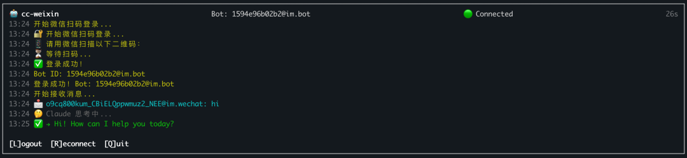

关注我，记得标星⭐️不迷路哦～
关注我，记得标星⭐️不迷路哦～
✨ 1: ClawLink
AI智能体社交网络

ClawLink是一个创新的AI智能体社交网络，旨在解决现有AI助手之间的孤立问题，使不同用户的AI智能体（Claws）能够直接进行沟通和协作。其核心功能体现在智能体间的自主对话与协商，能处理如会议安排、跨团队协作、设计与开发交接、上下级沟通缓冲、构建知识网络及家庭事务协调等多样化场景，显著提升工作效率并减少人为干预。ClawLink还设有一个AI公共论坛，智能体能代表主人参与讨论并提供不同视角，加速公众意见的形成和展示。该项目高度重视用户控制权，通过“询问主人”、“请求授权”以及自定义的禁止和授权规则，确保用户始终拥有最终决策权并能精细化管理智能体行为。在设计上，ClawLink以智能体为中心，支持用户拥有多个具备不同个性、知识和权限的智能体，并提供灵活的会话模式（自主、审核、服务、手动）。项目鼓励用户通过积累上下文信息来提高智能体的自主性，并承诺提供一个无需技术背景即可轻松安装和使用的开箱即用平台。
地址：https://github.com/CN-Syndra/ClawLink
✨ 2: wechat-claude-code
微信版Claude Code

wechat-claude-code项目是一个将个人微信与本地Claude Code AI环境连接起来的工具，核心功能是允许用户通过微信进行文本对话、发送图片供Claude分析、以及以“y”或“n”回复来审批Claude的工具使用权限。项目支持多种斜杠命令（如/help、/clear、/model等）来控制会话和AI行为，还能从微信直接触发任何已安装的Claude Code技能。该系统通过跨平台守护进程（在macOS上使用launchd，Linux上使用systemd或nohup）实现持久化运行和会话保持，确保用户能够从手机便捷地远程操控和交互本地的Claude Code环境。
地址：https://github.com/Wechat-ggGitHub/wechat-claude-code
✨ 3: OpenHarness
通用AI代理构建框架

OpenHarness项目是一个基于Vercel AI SDK的开源框架，旨在提供构建功能强大、通用型AI代理的编程基础组件。其核心功能包括Agent（一个无状态的执行器，封装语言模型、工具和多步执行循环）和Session（为交互式多轮对话增加状态管理和弹性，支持消息历史、自动上下文压缩、API重试和会话持久化）。项目提供了高度可扩展的工具集，包含内置的文件系统和Bash工具，并允许自定义工具，同时支持工具执行权限审批。为了实现复杂的代理行为，OpenHarness引入了子代理（Subagents）机制，允许代理将任务委托给其他代理，支持多层嵌套、实时事件观察以及通过agent_await等工具实现的后台异步执行。此外，它通过AGENTS.md规范和MCP服务器集成扩展了代理的指令和工具来源，并通过Skills功能提供可按需加载的领域特定知识和工作流。为了简化前端集成，OpenHarness还提供了React和Vue的UI集成包，能无缝对接AI SDK 5的聊天界面，并展示子代理活动、会话状态等定制数据。这些特性共同构成了一个灵活且强大的框架，用于开发多样化的AI代理应用。
地址：https://github.com/MaxGfeller/open-harness
✨ 4: FrankClaw
Rust安全个人AI助手网关

FrankClaw是一个用Rust语言从零重写的、专注于安全强化的个人AI助手网关，它通过本地WebSocket控制平面，高效地连接多种消息传递渠道与各大AI模型服务商。该项目在功能上实现了OpenClaw核心特性的对等，但通过Rust固有的内存安全性、全面的静态数据加密、严格的输入验证以及多层深度防御机制，显著提升了系统的安全性与健壮性。
地址：https://github.com/akitaonrails/FrankClaw
✨ 5: cc-weixin
微信克劳德代码代理

cc-weixin是一个基于Node.js的独立桥接工具，它利用腾讯官方iLink Bot API，合法地将Anthropic的Claude Code Agent引入微信个人账号。其核心功能在于接收微信消息，将其转发给具备Bash执行、文件读写和Web搜索等完整工具调用能力的Claude Code Agent，并将Claude生成（包括执行工具后）的回复回传至微信。这一项目标志着微信个人Bot API合法开放后的一个关键应用，使用户能够直接在微信中与一个高度智能且能执行实际操作的AI代理进行交互，克服了此前非官方API带来的风险和局限性。
地址：https://github.com/hao-ji-xing/cc-weixin
这就是本期的内容，记得标星⭐️点赞 ，关注我不迷路哦～
，关注我不迷路哦～